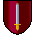
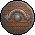
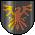
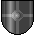
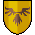
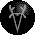
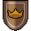
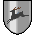

Places
Glimormir

The Great Lake of Glimormir lies in the northwest of the Bloodmarch. On its western shore is the Eldmark, on the eastern shore the Lee and on the northwest shore are the Witherlands. In the midst of the lake lies the fair Isle of Immiel, home of the Golden Fey and seat of their King, Galahar the Calm. The realm of Glimormir is the one sanctuary in the Bloodmarch where the evil of the Dark Fey cannot penetrate, such is the power and purity of Galahar.
The Long Mountains

The Long Mountains begin in the far north of the Bloodmarch and sweep down to the southwest like a scimitar. In the north, they lie between the Lee to the west and the Last Northing to the east. Further south, they touch upon Dawnwood to the east, the Deeping to the south, Weirdwood to the west and the Eldmark to the north. The mighty River Imilvir cuts through the Long Mountains in the land of Scaradir before tumbling into Dawnwood. The Long Mountains are the realm of the Long Dwarves and there are seven lands within its borders, Erenim, Isilfrey, Thordroth, Farwain, Beomir, Scaradwin and Scaradir. In Beomir stands the Citadel of the King of the Long Mountains.
Weirdwood

Weirdwood lies in the west of the Bloodmarch, south of the Eldmark, east of the Long Mountains and the Deeping, north of the Gelm. Through its midst flows the mighty River Imilvir. Weirdwood is the realm of the High Fey and there are nine lands within its borders, Elinvar, Merikith, Arelmar, the Shimmering Forest, Aradel, the Forgotten Forest, the Forest of Forever, the Whispering Forest and the Golden Forest. In the Shimmering Forest, near the banks of the River Imilvir stands the Citadel of the High King of Weirdwood.
The Great Ocean

To the east of the Bloodmarch lies the Great Ocean. In the north, it beats upon the shores of the Last Northing and separates the Isle of Arungor from the mainland. Further south, it crashes upon the shores of the Fallows, the Delve and the Marish. There are six seas within the Great Ocean, the Sea of Galorwain in the far north, the Sea of Fire betwixt Arungor and the Last Northing, the Weeping Sea east of Arungor, the Grey Sea east of the Fallows, the Sea of Skulls off the coast of the Delve and, east of the Marish, the Shining Sea which reaches south beyond the Bloodmarch to Coromand.
The Marish

The Marish lies in the southeast of the Bloodmarch, west of the Delve, south of Dawnwood and the Fallows, east of the Deeping and the Gelm. Through the heart of the Marish flows the River Falthrang churning its way west from the mountains of the Deeping to the Bay of Ulmor and the Great Ocean. The Marish is the bleak and desolate realm of the Dark Fey and there are nine lands within its borders, Gliwain, Malgor, Dwardor, Barathor, the Plain of Death, Maranor, the Plain of Ravens and the Burning Plain. In Maranor, on an island in the Falthrang, stands the Dark Citadel of Boroth the Wolfheart, High King of the Dark Fey where hostages from all the realms of the Bloodmarch languish in the dungeons.
The Deeping

The Deeping lies in the south of the Bloodmarch, south of the Long Mountains, Weirdwood and Dawnwood, east of the Marish, west of the Gelm. Within its mighty ring of mountains lies Lake Tarefyr whose icy blue waters feed the swift-flowing River Caradwin. The Deeping is the realm of the Deeping Dwarves and there are seven lands within its borders, the Mountains of Thunder, the Mountains of Dawn, Ararak, Sharenor, Ildemar, Tharn, Zaragrorn and Tharn. In the Mountains of Thunder stands the Citadel of the King of the Deeping.
The Last Northing

The Last Northing lies in the northeast of the Bloodmarch, west of Arungor and the Great Ocean, east of the Long Mountains, north of Dawnwood. Through its midst flows the mighty river Arelon, curling westwards from the Long Mountains to the Bay of Tharran and the Sea of Fire. The Last Northing is the realm of the Arakai and there are eleven lands within its borders, Sharmark, the Sapphire Mountains, Melibor, Rilleon, Elmir, Ravenfrey, Erefar, Galorbard, the Crimson Mountains, Orcar and Caramane. In Rilleon, on the northern bank of the Arelon, stands the Citadel of the King of the Last Northing.
The Land of Midnight

The Land of Midnight lies to the northwest of the Bloodmarch, northwest of the Witherlands. Only a tiny portion of Midnight touches upon the Bloodmarch, but here, in Corelay, the mighty River Imilvir begins its southward journey to the Great Ocean. The Castle of Corelay, a short way north of the Imilvir, is bastion of Prince Morkin and the place where, if Luxor the Moonprince be rescued or perish, a mighty army of warriors from the four corners of Midnight will gather to march upon Boroth the Wolfheart and the Dark Fey.
The Delve

The Delve lies in the southeast of the Bloodmarch. To the west is the Marish, to the east the Sea of Skulls and the Great Ocean.\x09The Delve is a mountainous land and it is the realm of the Giants. Within its borders are twelve lands, Grorn, Finrod, the Iron Mountains, Gagrun, Tark, Othrym, Skirol, the Big Mountains, the Isle of Storms, Thordrin, Athruk and Tark. In Skirol stands the Citadel of the Great King of the Delve.
The Gelm

The Gelm lies in the southwest of the Bloodmarch, west of the Marish and the Deeping, south of Weirdwood. The Gelm is the principality of the Gelmings and within its borders are five broad lands, Finfyr, Geremiel, Samarand, Gilgrath and Emergelm. In Samarand stands the Citadel of the Prince of the Gelm.
The Witherlands

The Witherlands lie in the northwest of the Bloodmarch, east of the Lee, north of Glimormir and the Eldmark, southwest of Midnight. Through their midst flows the mighty River Imilvir before tumbling into the calm waters of Glimormir. The Witherlands are the realm of the Kith. Within the borders lie but three lands,\x09Eomir, Erifel and Sareon. In Eomir stands the Citadel of the Prince of the Witherlands.
The Fallows

The Fallows lies in the east of the Bloodmarch, north of the Marish, east of Dawnwood. Further east lies only the Great Ocean. The Fallows is the realm of the Uskarg and within its borders there are nine lands, the Isle of Alathor, Elinbrand, Arabar, Skordroth, Theodel, Cerrelm, Roreon, Athrudan and Erilmark. In Roreon stands the Citadel of the King of the Fallows.
The Lee

The Lee lies in the north of the Bloodmarch, east of the Witherlands and the Eldmark, west of the Long Mountains, on the eastern shore of Glimormir. At the heart of the Lee lies Lake Elinmor from whence the River Eodral flows south into Lake Glimormir. The Lee is the realm of the Athelings and within its borders there are eight lands, Rilnor, Thumar, Sharvik, Imildral, Varorn, Melthor, Cerevere and Ceremelth. In Varorn stands the Citadel of the King of the Athelings.
Immiel

Immiel, the fairest isle of all, lies in Glimormir in the northwest of the Bloodmarch. Here, all are kept safe from the ravages of the Dark Fey by Galahar the Calm, King of the Golden Fey and Lord of Immiel. His great Citadel stands atop the cliffs on the southern coast of the island.
The River Imilvir

The mighty river Imilvir winds its way through the length and breadth of the Bloodmarch, tumbling through mountains, forest and plains. The Imilvir is the Silver Road of the Blood March, where a ship may sail from the Witherlands to the Great Ocean.
Castles

{2}{3}{4}{5}
Citadels

{2}{4}{5}
The Eldmark

The Eldmark lies in the west of the Bloodmarch, north of Weirdwood, south of the Witherlands, west of the Long Mountains and the Lee. On its eastern borders, the mighty River Imilvir flows south from Glimormir towards Weirdwood. The Eldmark is the realm of the Eldrin and within its borders there are but four lands, Arelban, Arunvere, Meranor and Erilan. In Arunvere stands the Citadel of the Queen of the Eldmark.
The Mists of Oblivion

At the borders of the Bloodmarch, the good warrior will find the Mists of Oblivion and is well-advised to turn back before the mists thicken to impenetrable lest he vanish from the memory of his comrades forever, venturing instead to other less stricken lands.
Dawnwood

Dawnwood lies at the very heart of the Bloodmarch, south of the Last Northing, east of the Long Mountains, north of the Deeping and the Marish, west of the Fallows. Through its green forest flows the mighty River Imilvir before plunging into the Bay of Eregoth and the Great Ocean. Dawnwood is the realm of the Dawn Fey and within its borders there are seven lands, Maralan, Romiel, the Forest of Songs, Carafel, Emerthen, Elorthard and Corithel. In Elorthard, south of the Imilvir, stands the Citadel of the King of Dawnwood.
Arungor

The Isle of Arungor lies in the northwest of the Bloodmarch, off the coast of the Last Northing. To the north is the Sea of Galorwain, to the east the Weeping Sea and to the west the Sea of Fire. Arungor is the realm of the Dragonlords and within its borders there are nine lands, the Dragon Mountains, Angelf, Rildroth, Sarnoth, Erivik, Shrygal, Ashnar, Cormir and Aragor. In Ashnar stands the Citadel of the Dragon King of Arungor.
Beasts
Wolves

Long ago, when they were wild and free, the wolves were savage but noble hunters, feared but respected. Now, under the spell of Boroth the Wolfheart, they are the loathsome creatures of the Dark Fey. Moving silently ahead of Boroth's armies, they presage battle and death and destruction.
Wild Cats

These creatures of fierce grace inhabit only the wildest, most inaccessible mountains. So rare is the sight of one that throughout the Bloodmarch it is regarded as an omen of the greatest good fortune.
Trolls

Vicious, powerful and bloodthirsty, the witless trolls have long been the willing servants of the Dark Fey. Blindly loyal to Boroth the Wolfheart, they guard the vast dungeons of the Dark Citadel of Maranor, standing ready to slay any who seeks passage.
Dragons

Much ill has been spoken of dragons, but in truth they are wise and noble beasts. Their homeland is the Isle of Arungor, off the coast of the Last Northing where they live in friendship with the Dragonlords. Dragons will come to the aid of all good men in need and bear them swiftly through the skies to the place they seek.
Stormblade

Wrought long ago by the dwarven smiths of the Long Mountains and forged with dragonsfire Stormblade is a weapon of great power. The warrior who wields Stormblade is tireless in battle whilst his foes wilt with each blow.
Bloodbringer

In the Last Northing, Bloodbringer was the Sword of the Kings. He who wields Bloodbringer will command the loyalty of the Lords of the Arakai, leading them to battle and to glory.
Widowmaker

Widowmaker was the Great Axe of Dwarfdom, in the age when the dwarves were one people. The war for its possession split Dwarfdom asunder and gave rise to the bitterness that still estranges the Long Dwarves from their kin, the Deeping Dwarves. A dwarf who wields Widowmaker in battle is said to be invincible.
Aranath

Aranath, in the tongue of the Fey, is the Golden Sword. It was made many summers ago, before the Dark Fey became touched by evil. In the hands of any Fey Lord, it is a weapon of ferocious power. In the hands of any other, it brings ill-fate.
Persuader

In the time of the first wars against the Dark Fey, Persuader was brought to the Bloodmarch by a Prince of the Gelm who had travelled south into Coromand seeking aid against Boroth and this axe was the magical gift he was given. He who wields Persuader is able to draw upon warriors from any stronghold not at war with his realm.
Skullcrusher

Wrought in the Iron Mountains by dwarven smiths who sought the favour of the King of the Delve, Skullcrusher is a weapon of great power in the hands of any Giant, such that in battle he will fight with the strength of two.
Swiftwing

Forged with dragonsfire on the Isle of Arungor many long winters ago, Swiftwing makes its bearer as tireless as a dragon, needing no rest or shelter. Yet the wielder of Swiftwing should beware - if he is part of a fellowship, Swiftwing's magic will not work for its spirit is as free and lonely as the great beasts of Arungor.
The Golden Fey

Long have the Golden Fey dwelt on the Isle of Immiel in Glimormir, singing their songs and weaving their golden magic. Upon Immiel, their magic is so legendary against evil that Boroth dares not to assail the island even now but beyond their golden isle their powers fall away. Of all the peoples of the Bloodmarch, only the Golden Fey have no hostage held in the Dark Citadel.
The Giants

The Giants are possessed of great strength, but they are slow-witted and often use their strength unwisely. Their mountainous realm, the Delve, lies in the south-east of the Bloodmarch, betwixt the Marish and the Great Ocean. The King's stepdaughter, Melinissa the Sweet, is held hostage in Maranor by the Dark Fey.
The Dark Fey

Touched by evil long, long ago and now trapped in darkness, the Dark Fey are consumed by an unquenchable thirst for power and dominion. Their King, Boroth the Wolfheart, will not rest until he has enslaved the entire Bloodmarch. Their realm is the Marish, in the southwest between the mountains of the Deeping and the Delve. There, in the dungeons of the Dark Citadel of Maranor, Mad Boroth keeps prisoners hostage from each of the realms of the Bloodmarch, to ensure their reluctant compliance.
The Long Dwarves

Hardy and hospitable, the Long Dwarves dwell peaceably in their realm of the Long Mountains, which stretches half the length of the Bloodmarch, from the Mists of Oblivion in the far north to the borders of the Deeping in the south. Olthruda the Bountiful, the King's wife is held hostage in Maranor by the Dark Fey.
The High Fey

Possessed of much wisdom, but strange and enigmatic, the High Fey dwell in the Weirdwood in the west of the Bloodmarch, betwixt the Eldmark and the Gelm. Emedrel of the Fire, the High King's daughter, is held hostage in Maranor by the Dark Fey.
The Deeping Dwarves

The Deeping Dwarves are a brave and resilient people. Their mountain kingdom, the Deeping, lies to the south of the Bloodmarch, between the Gelm in the west and the Marish in the east. Thalgrima the Betrothed, the King's bride to be, is held hostage in Maranor by the Dark Fey.
The Gelmings

Friendly and good-hearted, the Gelmings dwell in the Gelm, in the southwest of the Bloodmarch,south of Weirdwood and the Deeping. Wythran the Weaver, dabbler in the webs of fate and the King's only son, is held hostage by the Dark Fey in Maranor.
The Dragonlords

The Dragonlords of Arungor have, over the years earned the trust and friendship of the dragons that dwell in the island's mountains. The Dragonlords are fearsome warriors and their island kingdom in the northeast of the Bloodmarch, off the coast of the Last Northing has seen no war for many a year. Sagrana Goldenwing, the King's sister, is held hostage by the Dark Fey in Maranor.
The Athelings

Proud and warlike, the Athelings dwell in the Lee in the north of the Bloodmarch, betwixt the Witherlands and the Long Mountains. Zenethor the Strong, King of the Lee, is held hostage by the Dark Fey in Maranor.
The Uskarg

The Uskarg, a wild and warlike people, rule the Fallows, a kingdom in the east of the Bloodmarch bordered in the west by Dawnwood and the Marish, in the east by the Great Ocean. Djalina Snowheart, the King's daughter, is held hostage by the Dark Fey in Maranor.
Characters
Morkin Prince

Corleth of Corelay

Anderlane of the Arakai

Rorthron the Wise

Itar the Green

Arin Lord Blood

Galagrim of the Flame

Luxor the Moonprince

Kargrim the Cautious

Morathron the Sorceror

Guthrane Oakfist

Djalina Snowheart

Grumrud Slowaxe

Asholeth the Fey

Boroth the Wolfheart

Ildrar the Stubborn

Mogrik the Witless


Torgrim Arrowhand

Uthran the Meddler


Marik Silktongue

Haraglai Stormgut

Oglim the Lonely

Aloroth the Fey

Yrgreth Deathbringer

Stublog Ironskull

Orabrin Lionsblood

Sparthor the Patient

Cadron the Bemused

Brunak the Wanderer

Skarai the Dreamer

Rugrak Firmaxe

Morgreth the Unsure

Graleth the Bitter

Muglum the Handsome

Dorok the Dour

Scirane the Swift


Sadlak the Merry

Corlane the Bear

Moglai Firewolf


Norgrim the Rock

Jarleth the Shining

Urskreth the Vile

Borgalug Bonecrusher

Aranor Boldsword

Moongrim Longneck

Leonik Leatherhand

Storbold the Scribbler

Arbethor Greenhand

Amarin Starchaser

Avila the Cold

Hoon the Warrior

Eothor Sparehand

Snorglum Bighammer

Orgrotha the Persuader

Forthar the Hunter

Joruk Redfist

Var the Swordsman

Wythran the Weaver

Carithila Queen


Garfin Quicklip

Zenethor the Strong

Gothrum the Glum

Skyrdreth Iceheart

Lanklin the Boaster

Holdar Longeye

Aramila the Seer

Melinoth Larkstongue

Mana the Huntress

Rorlbar the Poet

Garamor the Fat

Borlum the Happy

Akrith Bloodhand

Godrold Heavyhand

Darath the Lion

Parik the Miser

Merithel of the Lake

Aremela Princess

Farlik Whiteknife

Arak the Avenger

Toraneth the Cruel

Dargrith the Butcher

Ogrin Woodenblade

Arag Drythroat

Justrik the Hawk

Sharila Suresword

Rainar the Besotted

Jaranor the Hasty

Asunai Ironwing

Urgoreth the Despiser

Mirgrath the Black

Mograk Rustaxe

Taroleth the Jester

Arfold Longtooth

Dorgrun Roughhand

Molicor the Kind

Igral Mouseheart

Orimund the Resplendent

Crun the Weasel

Faramoth the Solemn

Ulgrim the Weary


Miranar Fairhand

Ulgrud the Treacherous

Elgrena the Gracious

Alagrim Ironaxe

Karahar the Wistful

Oragrane the Fearless


Marathor the Splendid

Barag the Fierce

Golgud the Reluctant

Ilareth the Chosen

Torbrith Swiftfoot

Slorum the Smug

Samara Wildheart

Hilgor the Meek

Zalnor Sourspleen

Melgran Dragonsword

Khalak the Blue

Boragrim Sharpaxe

Melkrith Nightshade

Oscruth Loosehead

Volgor the Sure

Talmar the Quiet

Olog the Friendly

Olagrum the Steady

Harumbar the Unhappy

Thorgran Wildsword

Aluthrim the Bold

Alargrith Warhelm

Gorolan the Benign

Ilvar the Penitent

Araleth the White


Arithel the Joybringer

Emedrel of the Fire

Andremar the Starborn

Galdreth the Fair

Sagrana Goldenwing

Elina the Enchantress

Tarella the Intrepid

Oraina the Placid

Karelda the Carefree

Imirel Starblade

Ylanda the Wishful

Morgrissa Hammertongue

Trantana the Grand

Oglissa the Rose

Melinissa the Sweet

Olthruda the Bountiful

Thalgrima the Betrothed

Elessa of the Mists

Ulene Quietheart

Sherinar of Shadows

Mirithel the Warm

Kiranda the Wild

Galahar the Calm

Morkin Prince
Citadels
Beasts
Flag => Boat
Axe => Wolf
Sword => Cat